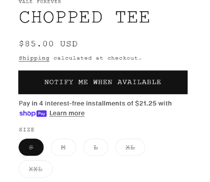

The best way
The best way yo get what you want is to get them directly from the source. Signing up for email notifications is a good way to be reminded when new items drop. Another way is to know drop days.
Vale Forever drops every Friday at 11am est. You can be notified when they drop specific items you want.

Ebay, Grailed, Goat, Stockx, etc.
The next way that many people know about is to buy from resellers on different websites. This can be an easy, but expensive route to take. If you want to get a better deal, there are ways to make this happen.
- Go after items that are not in high demand. Sellers will often list them for lower prices because they are not selling quick enough.
- Bid on items. I have gotten great deals from bidding on items instead of buying them at the prices listed. This again works better on items not in super high demand.
- Be patient. If you want to bid, set the bid for a longer expiration time. If you want a certain piece, keep tabs on it, and wait for the demand to go down.
Auctions
The next best way that can take some time is auctions. There are two types of auctions. The first is the Ebay style auctions where an item is listed and you will have a certain amount of time to win the auction. The second are live auctions. The live auction platform I use is TikTok. Sellers often do live auctions where individual clothing items are auctioned off one at a time for usually around 15-25 seconds, although that can vary. The highest bidder in that time frame gets the item. You can get some great deals during the live auction, however it can feel like gambling, so just make sure you don't addicted to "winning". Just ask yourself before you bid "Do I want this item?" and "How much would I actually pay to have it?"